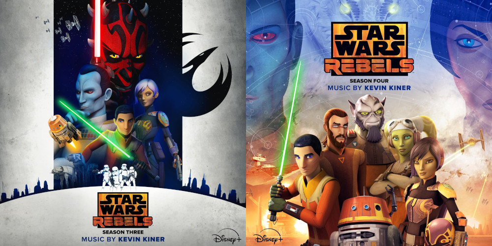

News
Star Wars Rebels S3-4 OSTs Released - 5/3/2024
by enderdrag64

Image source: Listings on Amazon
For the last 6 years, ever since Star Wars Rebels went off the air, fans have been clamoring for official soundtrack releases.
Fortunately, fans haven't been *completely* in the dry. Some of the composers uploaded a few cues onto their websites (e.g. kevinkiner.com, kinermusic.com, davidglenrussell.com, gruevenmusic.com) as part of demoreels, and starwars.com had officially published one cue per episode as part of their episode guides. That said, there was still a substantial amount of music missing, and many fans didn't know about these sources at all. For a mainstream listener, if it isn't on Spotify it doesn't exist.
All that changed today, when Walt Disney Records surprise dropped season 3 and 4 albums onto most digital streaming platforms. These OST albums are both over 2 hours each, featuring 71 and 72 tracks respectively. This is an extremely generous amount of music compared to the pitiful OST albums that seasons 1 and 2 got. Even better, the new albums don't include all of the music that was previously available on composer sites, avoiding redundancy and resulting in more new tracks than there would have been otherwise.
Here are the tracklists of the two albums:
| Season Three |
| 01 |
Ezra Controls the Walker |
1:55 |
| 02 |
Bendu |
2:14 |
| 03 |
Thrawn's Theory |
1:48 |
| 04 |
Meet the Ugnaughts |
1:02 |
| 05 |
Hera Calls Ezra |
1:46 |
| 06 |
Phantom Explodes |
1:26 |
| 07 |
Ezra Suspended |
2:53 |
| 08 |
Maul Finds the Holocron |
2:52 |
| 09 |
Bendu Explains the Holocrons |
2:16 |
| 10 |
Ezra Aplogizes |
1:51 |
| 11 |
Try Again |
0:41 |
| 12 |
Maul Escapes |
1:13 |
| 13 |
My Real Name Is Sabine |
1:00 |
| 14 |
Ambushing the Imperials |
2:48 |
| 15 |
Thrawn's Deductions |
2:25 |
| 16 |
Rex Sees Kalani |
1:07 |
| 17 |
Empire vs. Separatists |
1:50 |
| 18 |
Mart Sato |
2:39 |
| 19 |
Sato and Thrawn |
3:49 |
| 20 |
Split the Treasure |
2:24 |
| 21 |
Hitting 190 |
1:03 |
| 22 |
Thrawn's Inspection |
2:43 |
| 23 |
Discussing the New Fighter |
1:08 |
| 24 |
Drink This Potion |
2:06 |
| 25 |
Fighting Sister Sabine |
1:41 |
| 26 |
Entrance to Underground |
1:10 |
| 27 |
Remains of Saw's Team |
2:50 |
| 28 |
Capture the Bug |
1:48 |
| 29 |
Klik Klak |
1:55 |
| 30 |
Last Queen's Egg |
2:44 |
| 31 |
Thrawn's Search Narrows |
1:10 |
| 32 |
Convincing Sabine |
2:37 |
| 33 |
First Training Session |
1:11 |
| 34 |
Hera and Kanan Discuss Sabine |
1:01 |
| 35 |
Mandalorian Vambrances |
0:52 |
| 36 |
Ezra Tries to Console Sabine |
1:49 |
| 37 |
Sabine Is Back |
1:54 |
| 38 |
Third Training Session |
2:13 |
| 39 |
Sabine's Catharsis |
2:56 |
| 40 |
Sabine Has the Darksaber |
0:39 |
| 41 |
Sabine and Her Mother |
2:59 |
| 42 |
Saxon's Betrayal |
1:24 |
| 43 |
Thrawn Sparring |
1:18 |
| 44 |
Pryce Fights Rex |
1:45 |
| 45 |
Thrawn Knows |
1:36 |
| 46 |
Thrawn Outplays Hera |
2:18 |
| 47 |
Mon Mothma's Speech |
1:38 |
| 48 |
Chopper Is Hacked |
1:48 |
| 49 |
AP-5 in Space |
0:30 |
| 50 |
Obi-Wan's Recording |
1:21 |
| 51 |
Hera Appeals to Ezra |
0:52 |
| 52 |
Show Me Something |
1:33 |
| 53 |
Maul Appears |
3:15 |
| 54 |
Binary Sunrise |
2:09 |
| 55 |
Mouse Droid Spy |
2:00 |
| 56 |
Thrawn Interrupts Kallus |
1:18 |
| 57 |
Fleet Ambushed |
3:31 |
| 58 |
Going Up Against the Empire |
2:21 |
| 59 |
Kanan Implores Bendu |
1:06 |
| 60 |
Sato's Choice |
1:31 |
| 61 |
Thrawn in Control |
1:51 |
| 62 |
Ezra Needs Sabine |
1:01 |
| 63 |
Fire Up the Generator |
1:10 |
| 64 |
Orbital Bombardment |
1:41 |
| 65 |
Mandalorian War Room |
1:32 |
| 66 |
Ezra Arrives with the Mandalorians |
2:25 |
| 67 |
Running from Bendu |
1:51 |
| 68 |
Interdictor Explodes |
1:29 |
| 69 |
Fly Into the Blockade |
2:04 |
| 70 |
Thrawn and Bendu |
1:02 |
| 71 |
Aftermath of the Attack |
1:28 |
|
|
|
|
| Season Four |
| 01 |
Kanan and Hera Flirt |
0:33 |
| 02 |
In the Ashes |
1:44 |
| 03 |
Saw's Holo |
2:00 |
| 04 |
Onboard with Saw |
1:44 |
| 05 |
Ghost Saves Ezra and Sabine |
1:19 |
| 06 |
When Do We Leave |
0:35 |
| 07 |
Visago Has Legitimate Business |
2:15 |
| 08 |
Little Loth Friends |
1:37 |
| 09 |
Ezra Sees the Wolf |
1:10 |
| 10 |
The White Lothwolf |
4:06 |
| 11 |
Connection to Lothal |
1:06 |
| 12 |
Kanan and Hera Interrupted |
1:51 |
| 13 |
Communing with the Wolves |
1:34 |
| 14 |
Kanan's Past |
3:22 |
| 15 |
Discussing a Lothal Attack |
1:16 |
| 16 |
Ezra Impersonates Lizard |
1:50 |
| 17 |
Alliance Agreed to Help |
1:29 |
| 18 |
Hera Outmaneuvers Skerris |
3:12 |
| 19 |
Searching for Hera |
1:12 |
| 20 |
Wolf Mystery |
1:26 |
| 21 |
Prepping for Rescue |
1:10 |
| 22 |
Kiss and a Rescue |
1:11 |
| 23 |
Kanan and the Fire |
1:25 |
| 24 |
Kanan's Gone |
1:13 |
| 25 |
Wolves Chase Ezra |
1:49 |
| 26 |
Pryce Is Punished |
1:09 |
| 27 |
Nobody More Than Kanan |
2:05 |
| 28 |
I Am Dume |
0:42 |
| 29 |
Fighting Rukh |
1:20 |
| 30 |
Ezra Lost |
1:34 |
| 31 |
Gift to the Empire |
0:29 |
| 32 |
Animals in the Field |
0:32 |
| 33 |
Parting with the Wolves |
1:07 |
| 34 |
The Emperor Gets Involved |
1:11 |
| 35 |
Remember Why We Came |
1:44 |
| 36 |
Clues from the Hologram |
1:33 |
| 37 |
Mural Moving |
1:04 |
| 38 |
Into the Gateway |
0:52 |
| 39 |
Ezra Into the Temple |
0:49 |
| 40 |
The Owl |
1:38 |
| 41 |
You Missed a Lot |
1:28 |
| 42 |
Kanan's Will |
3:42 |
| 43 |
Escape from the Temple |
2:26 |
| 44 |
Seal the Portal |
2:56 |
| 45 |
Goodbye Kanan |
2:22 |
| 46 |
Anything for Ezra |
2:15 |
| 47 |
Imperial Assault |
2:46 |
| 48 |
Pryce Victorious |
1:00 |
| 49 |
Hera's Arrival |
2:13 |
| 50 |
Where Is Your Army Now |
0:35 |
| 51 |
Wolves to the Rescue |
0:38 |
| 52 |
Wolves Maul the Stormtroopers |
1:15 |
| 53 |
Ezra Reflecting |
2:12 |
| 54 |
I Can Always Count on You |
1:04 |
| 55 |
Shootout Outside the Dome |
2:28 |
| 56 |
Rukh Calls Thrawn |
0:42 |
| 57 |
Ezra Disappears |
4:48 |
| 58 |
Ezra and Thrawn |
3:26 |
| 59 |
Wolves Run by Ghost |
1:39 |
| 60 |
Melch vs. Stormtroopers |
1:02 |
| 61 |
Palpatine Makes His Offer |
2:08 |
| 62 |
Shootout in the Shield Generator |
1:40 |
| 63 |
Open the Door |
0:44 |
| 64 |
Melch Rushes In |
1:30 |
| 65 |
Ezra Makes His Choice |
1:54 |
| 66 |
From the Rubble |
1:15 |
| 67 |
Hondo and Melch |
0:54 |
| 68 |
Ezra's Backup |
1:00 |
| 69 |
Purrgil Arrive |
2:52 |
| 70 |
Detonate the Dome |
2:57 |
| 71 |
Ezra's Message |
2:00 |
| 72 |
Epilogue and End Credits |
3:31 |
|
Return to Top
New Cue Title Revealed - 5/4/2024
by enderdrag64

Image creator: Mark Graham on Instagram
Mark Graham, the owner of JoAnn Kane Music Service, posted a video today in honor of Star Wars Day, which revealed some new information about the score to Star Wars (1977). Fans have always wondered about the original cue titles of the two "Cantina Band" cues, which on the official albums have always just been referred to as "Cantina Band" and "Cantina Band #2" respectively.
In the new video, Mark Graham is in the JKMS library, and shows off some original sheet music from the 1977 recording sessions. First, he shows off some of the original parts from 1m2 Star Wars. These include a 2nd Violins part, as well as Maurice Murphy's first trumpet part. These were truly a treat to see, although they didn't reveal any new information that wasn't known before.
It's what he shows next that's extremely cool. He pulls out John Williams' original sketch for what's previously only been known as "Cantina Band #2". It turns out that the original cue title was 5m4-6m1 Don't Bee That Weigh. Mark goes on to explain that this is a reference to Benny Goodman's famous hit, Don't Be That Way. The Cantina Band cues were written in a big band jazz style, similar to that of Benny Goodman, and so John Williams decided to reference him in the cue titles.
Return to Top
© 2024 by enderdrag64-design. All rights reserved.